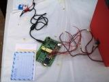
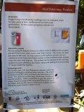

Electronics freak, hardware tinkerer, movie buff, android lover and blogger
I made a prototype of the idea given by a child named Utkalika Patnaik from Orissa. The idea was to detect mail whenever it drops in the mailbox. People don’t have to constantly check for their important mails – they come to know when the mail arrives (it becomes tedious going down again and again to check the mail when you are living in an apartment with your mail box suited on the ground floor).

I am using IR obstacle detector to detect mails or letter in the postbox and alert the owner when a new mail/letter arrives. The owner can then just remove the mail. So, this system can be useful to people who are waiting for some important letters as they will instantaneously alerted when any mail appears.

The system uses 3 IR led –Photodiode detector which are placed accordingly for optimum letter detection. The output is displayed on LED which is placed in the letter box owner’s house. ATMega16 was used for controlling the input and the output. The LED is on continuously till the letter is removed from the postbox. Other possibilities to give the output is using a buzzer or using an RF Transmitter/Receiver to give the output. One can also attach a GSM based module to send a SMS to the owner whenever a letter arrives.
Explaining to Dr. APJ Abdul Kalam